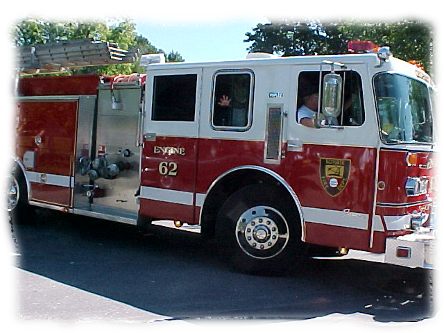
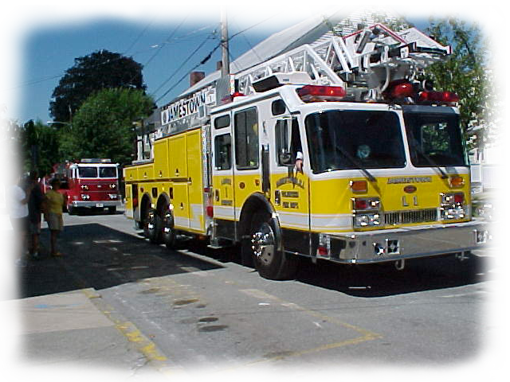

Mission:
  The mission of the Warren Fire Department is to provide comprehensive services, safety, and education to the citizens of Warren and its visitors, meeting their needs and expectations with the utmost courtesy and compassion, while being a progressive fire department answering the call of duty to save lives and property in a timely manner, never wavering in pride and dedication to this mission.The Town of Warren Fire Department has been providing emergency service to our residents since 1802. The primary mission of our fire department is safeguarding and preserving life and property against the elements of fire and disaster. Unattended cooking and careless smoking continue to be the leading causes of fire but due to the dedication of our volunteers, the property loss has been minimized. The fire department has an operating strength of 75 members and serves a population of more than 11,000 citizens. The department operates from five stations that provide services to the residential, business, and industrial complexes throughout the town. All of our personnel receive ongoing training to meet the town’s high expectations. Training is one of our leading priorities, as it refines firefighter skills and enhances the safety of our citizens. The Fire Department continues to conduct proactive inspections of our businesses and industrial complexes to ensure code compliance. The goal of the Fire department is to assist our business merchants with enhancing the safety of their facilities. Our members also offer public safety talks as well as training in the use of portable fire extinguishers. The fire department continues to maintain an aggressive approach to pursue all grants that will assist us in performing our mission. We have been successful recently in being awarded several Federal Grants to increase personnel as well as receiving grants for fire apparatus, vehicle exhaust systems, and the complete upgrade of our self-contained breathing apparatus. Finally, I would like to commend our personnel for their dedication and tireless efforts in helping to keep our community safe.
Alexander Galinelli
Chief
Warren Fire Department